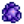
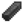
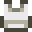
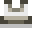
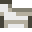
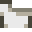

Tailoring
- For instructions on how to dye clothing using the Sewing Machine or Dye Pots, see Dyeing.
Tailoring involves creating new shirts, pants, skirts, shorts, and hats at the sewing machine located inside Emily and Haley's house or the Sewing Machine received as a reward for the "Rock Rejuvenation" special order. Boots and shoes can also be custom-tailored, which does not create a new item, but transfers the stats from one pair to another.
Tailoring and Dyeing are unlocked in a cutscene the day after the player acquires at least 1 Cloth. Emily will appear in front of the player's house and tell them that they can tailor clothes using the sewing machine at her house.
Each item requires Cloth in the feed and one other item on the spool. Prismatic clothing is random, so Cloth + Prismatic Shard can produce any of the 5 prismatic clothing items (including duplicates).
Shirts, Pants, and Hats cannot be sold anywhere in Stardew Valley. Boots/Shoes can be sold to the Adventurer's Guild.
Shirts
Shirts chosen at character creation at the start of the game are not dyeable. Their corresponding tailored versions may be dyeable after being created using a sewing machine.
The Oasis sells a random Shirt each day of the week for  1,000g. Shirts that can be chosen at character creation but cannot be Tailored may be purchased at the Oasis.
1,000g. Shirts that can be chosen at character creation but cannot be Tailored may be purchased at the Oasis.
There is a small, fixed chance to find a random cosmetic item when the player kills a monster, breaks a crate, tills an artifact spot, or shakes or chops a tree, as well as a higher but more variable chance when panning.[1] The possible cosmetic items include most shirts, as well as some hats. Pants and Boots are not obtainable from these drops. Furniture may also be dropped.[2]
Note that there are three shirts called "Bandana Shirt", none of which are dyeable. The non-dyeable "Sailor Shirt" chosen at character creation is visually nearly identical to the dyeable "Sailor Shirt" that can be created with a variety of fish, and has a dyeable neckerchief.
For dyeable shirts that can be created with more than one item, the resulting color is dependent on the item used to Tailor it.
| Image | Name | Description | Dyeable | Special Property / Notes | Recipe (Cloth + ) |
|---|---|---|---|---|---|
| Classic Overalls | A farming classic. | No | Can be chosen at character creation | ||
| Shirt | A wearable shirt. | No | Can be chosen at character creation | ||
| Mint Blouse | A cute, light green blouse. | No | Can be chosen at character creation | ||
| Dark Shirt | A dark colored shirt. | No | Can be chosen at character creation | ||
| Skull Shirt | A shirt with a menacing skull printed on it. | No | Can be chosen at character creation. Can be dropped by Haunted Skulls. |
||
| Light Blue Shirt | A light blue shirt. | No | Can be chosen at character creation | ||
| Tan Striped Shirt | A tan shirt with a white stripe going through the middle of it. | No | Can be chosen at character creation | ||
| Green Overalls | A slightly less popular farming classic. | No | Can be chosen at character creation | ||
| "Good Grief" Shirt | A good ol' shirt... | No | Can be chosen at character creation | ||
| Aquamarine Shirt | An aquamarine shirt. | No | Can be chosen at character creation | ||
| Suit Top | A formal top for fancy events and celebrations. | No | Can be chosen at character creation | ||
| Green Belted Shirt | A green, belted shirt. | No | Can be chosen at character creation | ||
| Lime Green Striped Shirt | A lime green shirt with white stripes. | No | Can be chosen at character creation | ||
| Red Striped Shirt | A red shirt with white stripes. | No | Can be chosen at character creation | ||
| Skeleton Shirt | A shirt with a skeletal rib cage printed on it. | No | Can be chosen at character creation. Can be dropped by Haunted Skulls. |
||
| Orange Shirt | An orange shirt. | No | Can be chosen at character creation | ||
| Night Sky Shirt | A shirt that reminds you of the night sky. | No | Can be chosen at character creation | ||
| Mayoral Suspenders | A pair of suspenders that looks awfully familiar... | No | Can be chosen at character creation | ||
| Brown Jacket | A nice, sturdy jacket made of brown material. | No | Can be chosen at character creation | ||
| Sailor Shirt | Reminds you of the open sea. | No | Can be chosen at character creation | ||
| Green Vest | A neat green vest over a shirt. | No | Can be chosen at character creation | ||
| Yellow and Green Shirt | A yellow shirt with a green stripe. | No | Can be chosen at character creation | ||
| Shirt | A wearable shirt. | No | Can be chosen at character creation | ||
| Shirt | A wearable shirt. | No | Can be chosen at character creation | ||
| Shirt | A wearable shirt. | No | Can be chosen at character creation | ||
| Shirt | A wearable shirt. | No | Can be chosen at character creation | ||
| Light Blue Striped Shirt | A light blue shirt with a white stripe. | No | Can be chosen at character creation | ||
| Pink Striped Shirt | A pink shirt with stripes. | No | Can be chosen at character creation | ||
| Heart Shirt | Wear your heart on your sleeves with this extra soft garment. | No | Can be chosen at character creation Randomly sold at the Oasis |
||
| Work Shirt | For long days in the fields. | No | Can be chosen at character creation | ||
| Store Owner's Jacket | A jacket that looks like it'd be worn by a small town merchant. | No | Can be chosen at character creation | ||
| Shirt | A wearable shirt. | No | Can be chosen at character creation | ||
| Shirt | A wearable shirt. | No | Can be chosen at character creation | ||
| Shirt | A wearable shirt. | No | Can be chosen at character creation | ||
| Green Tunic | A shirt fit for an adventurer. | No | Can be chosen at character creation | ||
| Fancy Red Blouse | A bright red blouse adorned with shiny yellow buttons. | No | Can be chosen at character creation | ||
| Shirt | A wearable shirt. | No | Can be chosen at character creation | ||
| Shirt | A wearable shirt. | No | Can be chosen at character creation | ||
| Male version: Female version: |
Plain Shirt | A simple shirt. | No | Can be chosen at character creation | |
| Retro Rainbow Shirt | A simple shirt with a faded rainbow pattern. | No | Can be chosen at character creation | ||
| Shirt | A wearable shirt. | No | Can be chosen at character creation | ||
| Lime Green Tunic | A bright green tunic with a belt. | No | Can be chosen at character creation | ||
| Shirt | A wearable shirt. | No | Can be chosen at character creation | ||
| Shirt | A wearable shirt. | No | Can be chosen at character creation | ||
| Shirt | A wearable shirt. | No | Can be chosen at character creation | ||
| Shirt | A wearable shirt. | No | Can be chosen at character creation | ||
| Shirt | A wearable shirt. | No | Can be chosen at character creation | ||
| Shirt | A wearable shirt. | No | Can be chosen at character creation | ||
| Shirt | A wearable shirt. | No | Can be chosen at character creation | ||
| Shirt | A wearable shirt. | No | Can be chosen at character creation | ||
| Shirt | A wearable shirt. | No | Can be chosen at character creation | ||
| Shirt | A wearable shirt. | No | Can be chosen at character creation | ||
| Shirt | A wearable shirt. | No | Can be chosen at character creation | ||
| Shirt | A wearable shirt. | No | Can be chosen at character creation | ||
| Shirt | A wearable shirt. | No | Can be chosen at character creation | ||
| Shirt | A wearable shirt. | No | Can be chosen at character creation | ||
| Shirt | A wearable shirt. | No | Can be chosen at character creation | ||
| Shirt | A wearable shirt. | No | Can be chosen at character creation | ||
| Shirt | A wearable shirt. | No | Can be chosen at character creation | ||
| Shirt | A wearable shirt. | No | Can be chosen at character creation | ||
| Shirt | A wearable shirt. | No | Can be chosen at character creation | ||
| Shirt | A wearable shirt. | No | Can be chosen at character creation | ||
| Shirt | A wearable shirt. | No | Can be chosen at character creation | ||
| Shirt | A wearable shirt. | No | Can be chosen at character creation | ||
| Shirt | A wearable shirt. | No | Can be chosen at character creation | ||
| Shirt | A wearable shirt. | No | Can be chosen at character creation | ||
| Shirt | A wearable shirt. | No | Can be chosen at character creation | ||
| Shirt | A wearable shirt. | No | Can be chosen at character creation | ||
| Shirt | A wearable shirt. | No | Can be chosen at character creation | ||
| Shirt | A wearable shirt. | No | Can be chosen at character creation |  Fairy Stone | |
| White Overalls Shirt | Classic overalls with a white shirt and belt. | No | Can be chosen at character creation | Milk | |
| Shirt | A wearable shirt. | No | Can be chosen at character creation | ||
| Shirt | A wearable shirt. | No | Can be chosen at character creation | ||
| Shirt | A wearable shirt. | No | Can be chosen at character creation | ||
| Shirt | A wearable shirt. | No | Can be chosen at character creation | ||
| Shirt | A wearable shirt. | No | Can be chosen at character creation | ||
| Shirt | A wearable shirt. | No | Can be chosen at character creation | ||
| Shirt | A wearable shirt. | No | Can be chosen at character creation | ||
| Shirt | A wearable shirt. | No | Can be chosen at character creation | ||
| Shirt | A wearable shirt. | No | Can be chosen at character creation | ||
| Shirt | A wearable shirt. | No | Can be chosen at character creation | ||
| Shirt | A wearable shirt. | No | Can be chosen at character creation | ||
| Shirt | A wearable shirt. | No | Can be chosen at character creation | ||
| Shirt | A wearable shirt. | No | Can be chosen at character creation | ||
| Shirt | A wearable shirt. | No | Can be chosen at character creation | ||
| Shirt | A wearable shirt. | No | Can be chosen at character creation | ||
| Neat Bow Shirt | A neat button down shirt with a prominent bow tie. | No | Can be chosen at character creation | ||
| Shirt | A wearable shirt. | No | Can be chosen at character creation | ||
| Shirt | A wearable shirt. | No | Can be chosen at character creation | ||
| Shirt | A wearable shirt. | No | Can be chosen at character creation | ||
| Shirt | A wearable shirt. | No | Can be chosen at character creation | ||
| Shirt | A wearable shirt. | No | Can be chosen at character creation | ||
| Shirt | A wearable shirt. | No | Can be chosen at character creation | ||
| Shirt | A wearable shirt. | No | Can be chosen at character creation | ||
| Shirt | A wearable shirt. | No | Can be chosen at character creation | ||
| Shirt | A wearable shirt. | No | Can be chosen at character creation | ||
| Shirt | A wearable shirt. | No | Can be chosen at character creation | ||
| Shirt | A wearable shirt. | No | Can be chosen at character creation |  Neptunite | |
| Shirt | A wearable shirt. | No | Can be chosen at character creation | ||
| Shirt | A wearable shirt. | No | Can be chosen at character creation | ||
| Shirt | A wearable shirt. | No | Can be chosen at character creation | ||
| Shirt | A wearable shirt. | No | Can be chosen at character creation | ||
| Shirt | A wearable shirt. | No | Can be chosen at character creation | ||
| Shirt | A wearable shirt. | No | Can be chosen at character creation | ||
| Shirt | A wearable shirt. | No | Can be chosen at character creation | ||
| Shirt | A wearable shirt. | No | Can be chosen at character creation | ||
| Shirt | A wearable shirt. | No | Can be chosen at character creation | ||
| Shirt | A wearable shirt. | No | Can be chosen at character creation | ||
| Shirt | A wearable shirt. | No | Can be chosen at character creation | ||
| Shirt | A wearable shirt. | No | Can be chosen at character creation | ||
| Shirt | A wearable shirt. | No | Can be chosen at character creation | ||
| Shirt | A wearable shirt. | No | |||
| Shirt | A wearable shirt. | No | |||
| Shirt | A wearable shirt. | No | |||
| Shirt | A wearable shirt. | No | |||
| Shirt | A wearable shirt. | No | |||
| Shirt | A wearable shirt. | No | |||
| Shirt | A wearable shirt. | No | Randomly sold at the Oasis | N/A | |
| Shirt | A wearable shirt. | No | Randomly sold at the Oasis | N/A | |
| Shirt | A wearable shirt. | No | Randomly sold at the Oasis | N/A | |
| Shirt | A wearable shirt. | No | Randomly sold at the Oasis | N/A | |
| Shirt | A wearable shirt. | No | |||
| Shirt And Tie | A white dress shirt and a tie. | Yes (necktie) | |||
| Shirt | A wearable shirt. | No | |||
| Shirt | A wearable shirt. | No | |||
| Shirt | A wearable shirt. | No | |||
| Striped Shirt | It's a shirt with faint stripes on it. | Yes | |||
| Male version: Female version:  |
Tank Top | A sleeveless shirt. | Yes | Sleeveless | |
| Cowboy Poncho | A legendary outfit from the old west. | Yes (but will have no effect unless corresponding asset is fixed manually or with a mod) | |||
| Male version: Female version:  |
Crop Tank Top | A sleeveless shirt cut extra short on the bottom. | Yes | Sleeveless | |
| Bikini Top | A summer staple. | Yes | Sleeveless | ||
| Wumbus Shirt | A shirt featuring a strange green guy. | No | |||
| Female version:  Male version:  |
80's Shirt | A gnarly t-shirt that sits off the shoulder. | Yes | ||
| Letterman Jacket | A jacket that's oozing with team spirit. | Yes (red portion only) | |||
| Black Leather Jacket | A cool jacket made of dark black leather. | No | |||
| Strapped Top | A top with a thin strap. | Yes | Sleeveless | ||
| Button Down Shirt | A simple, clean shirt. | Yes | |||
| Crop Top Shirt | A shirt cut extra short on the bottom. | Yes | |||
| Tube Top | A strapless top that wraps around the body. | Yes | Sleeveless | ||
| Tye Die Shirt | A shirt that was tied up and then dipped into multiple colored dyes. | No | Only obtainable as a random cosmetic item | ||
| Shirt | A wearable shirt. | No | |||
| Shirt | A wearable shirt. | No | |||
| Shirt | A wearable shirt. | No | |||
| Shirt | A wearable shirt. | No | |||
| Steel Breastplate | Decorative armor made from steel. | No | |||
| Copper Breastplate | Decorative armor made from copper. | No | |||
| Gold Breastplate | Decorative armor made from solid gold. | No | |||
| Iridium Breastplate | Decorative armor made from pure iridium. | No | |||
| Fake Muscles Shirt | You could hit the gym, or you could just wear this instead. | Yes | |||
| Flannel Shirt | A nice thick button down shirt with a cross-hatch pattern. Perfect for cold winters. | Yes | |||
| Bomber Jacket | A thick, sturdy jacket worn by fighter pilots long ago. | No | |||
| Caveman Shirt | A stone-age classic! | No | Sleeveless | ||
| Fishing Vest | Lots of pockets to store your tackle. | No | |||
| Fish Shirt | A shirt with a fish logo. | Yes (fish) | |||
| Shirt And Belt | A plain shirt with a brown belt. | Yes | |||
| Gray Hoodie | A sporty gray pullover with a hood. | No | |||
| Blue Hoodie | A sporty blue pullover with a hood. | No | |||
| Red Hoodie | A sporty red pullover with a hood. | No | |||
| Denim Jacket | A rugged jacket made from denim. | No | |||
| Track Jacket | A light jacket made from elastic material. | No | |||
| White Gi | A loose garment typically worn by martial artists. | No | |||
| Orange Gi | A loose garment typically worn by martial artists. | Yes (blue portion only) | Sleeveless | ||
| Gray Vest | A gray vest over a white shirt. | No | |||
| Kelp Shirt | It looks like you just washed up on the beach. Smells like it, too. | No | Sleeveless | ||
| Studded Vest | A black vest studded with metal spikes. | No | Sleeveless | ||
| Gaudy Shirt | It's a therapeutic blue... | No | |||
| Oasis Gown | The jewel of the desert. | No | Sleeveless | ||
| Blacksmith Apron | Handed down from one generation to the next. | No | |||
| Neat Bow Shirt | A neat button down shirt with a prominent bow tie. | Yes (bow tie) | Only obtainable as a random cosmetic item | ||
| High-Waisted Shirt | The high-waisted pants look, with a dyeable bottom. | Yes (bottom) | |||
| High-Waisted Shirt | The high-waisted jeans look, with a dyeable top. | Yes (top) | |||
| Male version: Female version: |
Basic Pullover | It's a plain pullover. | Yes | A variant of the male version may be obtained from the Makeover Stall at the Desert Festival[3] | |
| Turtleneck Sweater | Keep that neck piping hot. | Yes | |||
| Iridium Energy Shirt | Show off your iridium energy. | No | |||
| Tunnelers Jersey | It's a jersey for the Zuzu City Tunnelers. | No | |||
| Shirt | A wearable shirt. | No | |||
| Shirt | A wearable shirt. | No | Calcite | ||
| Gray Suit | It's a custom-tailored gray suit. | No | |||
| Red Tuxedo | An elegant top for formal events. | No | |||
| Navy Tuxedo | An elegant top for formal events. | No | |||
| Holiday Shirt | Celebrate the Feast of the Winter Star. | No | |||
| Leafy Top | Real leaves adorn this garment. | No | |||
| Goodnight Shirt | A big baggy nightshirt with a detailed moon graphic. | No | Can be purchased from Maru at the Desert Festival. | ||
| Green Belted Shirt | A green shirt with a belt. | No | |||
| Happy Shirt | It's the happiest shirt. | No | |||
| Shirt with Bow | This shirt comes with a little bow around the neck. | Yes | |||
| Jester Shirt | Put your inner clown on display. | No | |||
| Ocean Shirt | The shirt looks like underwater ripples. | No | |||
| Dark Striped Shirt | A dark shirt with colorful stripes. | Yes (stripes) | |||
| Bandana Shirt | A shirt with a bandana to keep your neck soft. | No | |||
| Backpack Shirt | A plain shirt with a canvas backpack. | Yes | |||
| Purple Blouse | A stunning purple blouse. | No | |||
| Vintage Polo | It's faded from age and smells like old closet. | No | |||
| Toga Shirt | It's an old design, but the airflow is really nice! | No | Sleeveless | ||
| Star Shirt | The star is supposed to glow in the dark, but it doesn't. | Yes (star) | |||
| Male version: Female version: |
Classy Top | It feels like the softest velvet. | No | ||
| Bandana Shirt | A shirt with a bandana to shield your neck from harm. | No | |||
| Vacation Shirt | It's a tourist shirt from the Fern Islands. | No | |||
| Green Thumb Shirt | It comes pre-rubbed with potting soil. | No | |||
| Bandana Shirt | A shirt with a bandana to keep your neck soft. | No | |||
| Slime Shirt | A shirt that looks like a big slime. | No | |||
| Excavator Shirt | Look sharp while digging for fossils. | No | |||
| Sports Shirt | Knock it out of the park with this classic look. | Yes (sleeves only) | |||
| Heart Shirt | Wear your heart on your sleeves with this extra soft garment. | Yes (heart) | Non-dyeable version can be chosen at character creation | ||
| Dark Jacket | A dark denim jacket lined with fleece. | No | |||
| Sunset Shirt | A shirt inspired by the most evocative time of day. | No | |||
| Chef Coat | The traditional uniform of a head chef. | No | |||
| Shirt O' The Sea | It smells like the brine of the sea. | No | |||
| Arcane Shirt | You can feel a certain power from this garment. | No | |||
| Plain Overalls | Classic overalls with a shirt that can be dyed. | Yes (shirt) | |||
| Sleeveless Overalls | Classic overalls with a sleeveless shirt that can be dyed. | Yes (shirt) | Sleeveless | ||
| Cardigan | A soft button-up cardigan sweater. | Yes | |||
| Yoba Shirt | A shirt featuring a prominent 'sign of the vessel'. | No | |||
| Necklace Shirt | A shirt with a gold necklace. | Yes | |||
| Belted Coat | A velvety black coat with a prominent belt. | No | |||
| Gold Trimmed Shirt | A shirt with a gold trim. | Yes | |||
| Prismatic Shirt | It's shimmering with prismatic energy. | No | Prismatic (rectangle on front) | ||
| Pendant Shirt | A shirt with a big pendant. | Yes | |||
| High Heat Shirt | The shirt almost looks like it's on fire! | No | |||
| Flames Shirt | Look cool with hot flames. | No | |||
| Antiquity Shirt | A shirt with an ancient pattern. | No | |||
| Soft Arrow Shirt | A soft-colored shirt with an upward arrow pattern. | No | |||
| Doll Shirt | A shirt featuring a strange ancient doll face. | No | |||
| Jewelry Shirt | A shirt with a simple golden chain. | No | |||
| Canvas Jacket | A brown jacket with a fleece lining. | No | |||
| Trash Can Shirt | You're wearing a trash can. | No | Sleeveless | ||
| Rusty Shirt | It's made to look like the shirt is full of rust. | No | Rusty Spoon | ||
| Circuitboard Shirt | The shirt looks like an electronics circuitboard. | No | |||
| Fluffy Shirt | It's fuzzy. | No | |||
| Sauce-Stained Shirt | It's already covered in spaghetti sauce so you don't have to feel guilty about it! | No | |||
| Brown Suit | It's a standard brown business suit. | No | |||
| Golden Shirt | It's a shiny golden shirt. | No | |||
| Captain's Uniform | The classic uniform of a ship's captain. | No | Anchor | ||
| Officer Uniform | The classic uniform for an officer of the law. | No | |||
| Ranger Uniform | The classic uniform for a park ranger. | No | |||
| Blue Long Vest | A long blue vest above a grey shirt. | No | Sleeveless | ||
| Regal Mantle | A regal purple garment. | No | |||
| Relic Shirt | I found a golden relic and I've got the shirt to prove it! | No | |||
| Bobo Shirt | A pink shirt featuring a strange-looking guy. | No | |||
| Fried Egg Shirt | Wake up, it's time for eggs. | No | |||
| Burger Shirt | Wear what you eat! | No | |||
| Collared Shirt | A shirt with a starchy white collar. | Yes | |||
| Toasted Shirt | It looks lightly toasted. | No | |||
| Carp Shirt | A big carp head adorns the front. | No | |||
| Red Flannel Shirt | A flannel shirt with a red and blue pattern. | No | |||
| Tortilla Shirt | A shirt that looks like the surface of a tortilla. | No | |||
| Warm Flannel Shirt | A flannel shirt with a warm brown and rose color. | No | |||
| Sugar Shirt | It's bursting with 'sweet energy'. | No | |||
| Green Flannel Shirt | A flannel shirt with a green and brown pattern. | No | |||
| Oil Stained Shirt | It's already stained with oil for that greasy look. | No | Sleeveless | ||
| Morel Shirt | This shirt features the iconic spring mushroom. | No | |||
| Spring Shirt | It's light, it's fresh, and it features the colors of spring. | No | |||
| Sailor Shirt | Reminds you of the open sea. | Yes (collar) | Non-dyeable version can be chosen at character creation | ||
| Rain Coat | The classic yellow rain coat. | No | |||
| Sailor Shirt | Unlike most sailor shirts, this one has a dyeable body and a white collar. | Yes (body) | |||
| Dark Bandana Shirt | A dark shirt with a colorful bandana. | Yes (bandana) | Can be dropped by Haunted Skulls | ||
| Dark Highlight Shirt | A dark shirt with bright highlights. | Yes (green portion only) | Can be dropped by Haunted Skulls | ||
| Omni Shirt | It's speckled with rainbow flecks! | No | |||
| Bridal Shirt | A beautiful white top, perfect for a bride. | No | |||
| Brown Overalls | It's hard to see the dirt stains on this one. | No | |||
| Orange Bow Shirt | A striped orange shirt with a big white bow. | No | |||
| White Overalls | A nice clean variant of the classic farmer look. | No | |||
| Pour-Over Shirt | A familiar zig-zag pattern adorns this shirt. Ahhh... that smell. | No | |||
| Green Jacket Shirt | Inspired by the mallard's coat. The shirt can be dyed. | Yes (shirt) | |||
| Short Jacket | A short dyeable jacket over a shirt. | Yes (jacket) | |||
| Polka Dot Shirt | A dark shirt with dyeable polka dots. | Yes | |||
| White Dot Shirt | A dyeable shirt with white polka dots. | Yes | |||
| Camo Shirt | Helps you blend in with the surroundings. | No | |||
| Dirt Shirt | You'll fit right in on the farm! | No | |||
| Crab Cake Shirt | Pre-slathered with aioli for your enjoyment. Bon Appetit! | No | |||
| |
Silky Shirt | It's made from a smooth silky substance. | Yes (blue portion only) | ||
| Blue Buttoned Vest | It's a blue shirt with dyeable sleeves. | Yes (sleeves only) | |||
| Faded Denim Shirt | It's a denim shirt with a dusty, faded look. | No | |||
| Red Buttoned Vest | It's a red shirt with dyeable sleeves. | Yes (sleeves only) | Only obtainable as a random cosmetic item | ||
| Green Buttoned Vest | It's a green shirt with dyeable sleeves. | Yes (sleeves only) | |||
| Tomato Shirt | A shirt that answers the big question: 'Tomatoes are'... (but the rest is smudged). | No | Sleeveless | ||
| Fringed Vest | A fringed brown vest over a sleeveless shirt. | Yes (shirt) | Sleeveless | ||
| Globby Shirt | It's got an indistinguishable glob pattern. | Yes | |||
| Midnight Dog Jacket | It's dyed a deep midnight blue from squid ink. | No | |||
| Shrimp Enthusiast Shirt | For those whose appetites demand a steady supply of shrimp. | No | |||
| Tea Shirt | A shirt inspired by the popular beverage. | No | |||
| |
Prismatic Shirt (white sleeves) | It's shimmering with prismatic energy. Has white sleeves. | No | Prismatic | |
| Prismatic Shirt (black sleeves) | It's shimmering with prismatic energy. Has dark sleeves. | No | Prismatic | ||
| Trinket Shirt | A shirt with large colored glass orbs attached to it. | No | |||
| Darkness Suit | A black suit top with a faded red pocket square. | No | |||
| Mineral Dog Jacket | It's infused with trace minerals from the ocean. | No | |||
| Magic Sprinkle Shirt | A shirt with prismatic sprinkles. | No | Prismatic version of the Polka Dot Shirt | ||
| Magenta Shirt | This particular shade is unique to the magma cap mushroom. | No | |||
| Ginger Overalls | The color scheme is inspired by ginger ale. | No | |||
| Banana Shirt | Consider this shirt, if you happen to love bananas. | No | |||
| Yellow Suit | It's a bold statement to wear this suit. | No | |||
| Hot Pink Shirt | A silky shirt in tropical pink. | No | |||
| Tropical Sunrise Shirt | This shirt smells like coconut. | No | |||
| Island Bikini | A Fern Islands classic. | Yes | Sleeveless. |
Pants
Note that image color does not necessarily reflect the color of the item upon first tailoring it.
Gray Baggy Pants and Gray Relaxed Fit Pants may be dropped by Haunted Skulls.
| Image | Name | Description | Dyeable | Recipe (Cloth + ) |
|---|---|---|---|---|
| Farmer Pants | Comfortable and durable for long hours in the field. | Yes | ||
| Shorts | Perfect for a hot summer's day... your legs will thank you. | Yes | ||
| Long Dress | A long, flowy dress. | Yes | ||
| Skirt | A cute skirt. | Yes | ||
| Pleated Skirt | A cute pleated skirt. | Yes | ||
| Dinosaur Pants | These pants were thought to have gone extinct a long time ago! | No | ||
| Grass Skirt | A skirt made of dried grass. | No | ||
| Genie Pants | Pants that balloon out near the bottom. Your wish has been answered! | Yes | ||
| Baggy Pants | A loose pair of pants. | Yes | ||
| Simple Dress | A soft, smooth, medium length dress. | Yes | ||
| Relaxed Fit Pants | These pants have a little more room for the legs. | Yes | ||
| Relaxed Fit Shorts | These shorts have a little more room for the legs. | Yes | ||
| Prismatic Pants | Pants that shimmer with prismatic energy. | No | ||
| Prismatic Genie Pants | Pants that shimmer with prismatic energy. | No |
There is a secret pants item that can be created after obtaining Mayor Lewis' Lucky Purple Shorts.
| Details |
|---|
| Placing the shorts in the feed and a Gold Bar on the spool will produce |
Hats
| Image | Name | Description | Recipe (Cloth + ) |
|---|---|---|---|
 |
Dinosaur Hat | A hat fashioned to look like a small dinosaur. | |
 |
Totem Mask | Don't worry, it won't warp your face... | |
| Logo Cap | A pink cap with a sleek profile. | ||
 |
Wearable Dwarf Helm | A slightly larger, human sized version of the helmets worn by dwarves. | |
 |
Fashion Hat | A fashionable hat with a feather in the brim. | |
 |
Pumpkin Mask | This must have been a pretty big pumpkin once... | |
 |
Hair Bone | A prehistoric version of the hair bow. | |
 |
Spotted Headscarf | A red polka-dot scarf tied around the head. | |
 |
Beanie | A warm hat with a pretty tight fit. | |
 |
Floppy Beanie | A warm hat with a looser fit. | |
 |
Fishing Hat | The wide brim keeps you shaded when you're fishing on the riverbank. | |
 |
Blobfish Mask | Just as spongy as the real thing! | |
| Party Hat | A goofy red hat that makes any celebration more fun. | ||
.png) |
Party Hat | A goofy blue hat that makes any celebration more fun. | |
.png) |
Party Hat | A goofy green hat that makes any celebration more fun. | |
 |
Pirate Hat | A captain's hat with a horrible skull on the front. | |
 |
Flat Topped Hat | An old style of hat once considered very fashionable. | |
 |
White Turban | A fine white silk turban with blue trim. | |
.png) |
Golden Mask | A faithful recreation of the Calico Desert relic! | |
 |
Propeller Hat | A goofy hat with a propeller on top. | |
 |
Bridal Veil | The traditional headwear for a bride. | |
 |
Witch Hat | A pointy hat popular with witches. | |
 |
Radioactive Goggles | Doesn't actually provide any protection from radiation. | |
 |
Swashbuckler Hat | The classic swashbuckler look. | |
 |
Qi Mask | ??? | |
 |
Star Helmet | A red hat with stars on it. | |
 |
Sunglasses | These give you a relaxed look. | |
 |
Goggles | These will make you look very safe. | |
 |
Forager's Hat | It's a forager's delight. | |
 |
Warrior Helmet | An Ostrich eggshell repurposed into a helmet. |
Boots
Boots and shoes cannot be created, but the stats can be transferred from one pair to another. To custom-tailor boots or shoes, place the item with the desired stats on the spool at the upper right and the item to be tailored in the feed at the lower left. The item on the spool will be consumed in the process. The resulting item in the feed will be called "Custom-tailored [name of shoe/boot]".
Notes
Some items that cannot be used to tailor clothing will not be greyed out until cloth is placed in the feed. Similarly, invalid tailoring items placed on the spool will cause cloth to be greyed out.
References
- Monsters, crates, artifact spots and trees use Utility::trySpawnRareObject to drop cosmetic items, with fixed odds ranging from 0.066% to 0.4% depending on activity. Panning instead calls Utility::getRandomCosmeticItem directly, with odds controlled by Tools/Pan::getPanItems, ranging from 0% to 13.4% depending on pan upgrades, luck, and daily luck.
- The function Utility::getRandomCosmeticItem is used to determine the type of cosmetic item. 20% will be furniture, 20% will be from a subset of tailorable Hats, and 60% will be from a subset of Shirts, covering most shirts but with some exclusions (mostly shirts with gendered variants, prismatic effects, or non-numerical IDs such as the Mystery Shirt).
- One of Emily's makeover outfits (see Data/MakeoverOutfits.xnb) for male farmers gives a minor variant of Basic Pullover (M) with the ID (S)SoftEdgePullover. This is dyable like the regular Basic Pullover (M) but its sprite differs by 2 pixels, and it has a unique, non-numerical ID, and so cannot be obtained from random cosmetic drops.
History
- 1.4: Introduced new shirts, hats, shorts, skirts, and pants. Prior to 1.4, shirts and pants could only be selected on the new game character customization menu or at the Shrine of Illusions and were not separate items. Prior to 1.4, hats were only available from the Adventurer's Guild, at certain festivals, from the Abandoned House, and in a small number of other locations.
- 1.5: Introduced new shirts, hats, and glasses.
- 1.6: New tailoring recipes added. Certain hats and shirts can be dropped randomly by monsters, crates and barrels, trees, Artifact Spots, or panning. Placing a Staircase in the player's pants slot no longer produces Trimmed Lucky Purple Shorts.